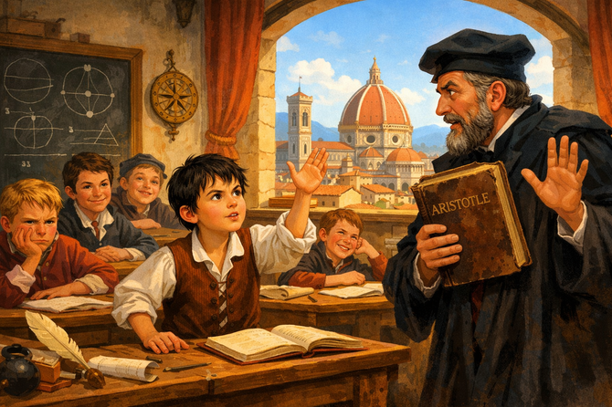
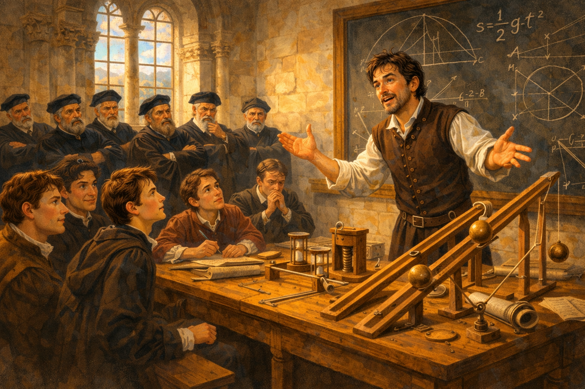
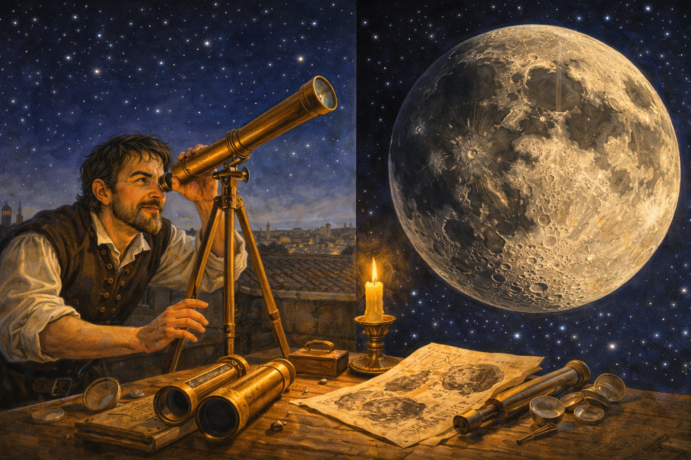
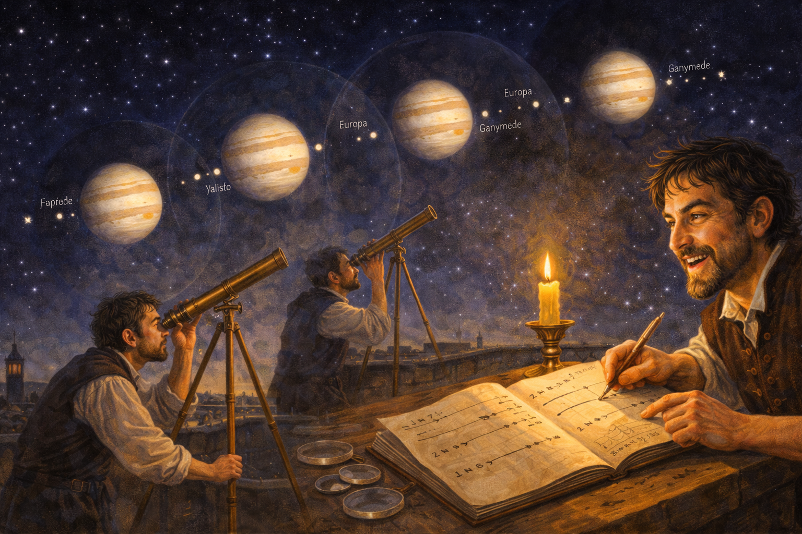
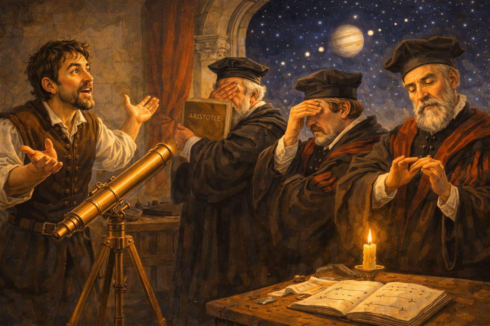
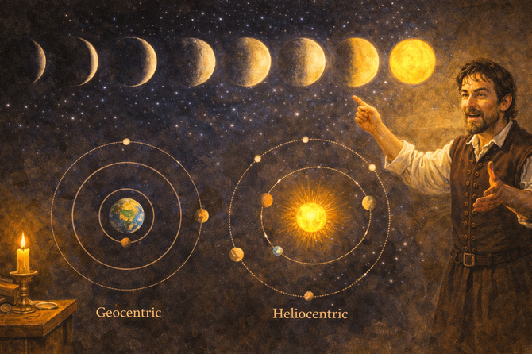

The Troublemaker of Pisa: Galileo's War on Nonsense

Narrative Prompt
Please generate a detailed narrative for a new graphic novel about Galileo Galilei that is fun, engaging, and appropriate for teenagers. The target audience is high school students studying introductory physics. Emphasize Galileo's rebellious personality, his sharp wit, and his willingness to challenge authority. He was essentially the original "well, actually" guy—but he was RIGHT, and that made everyone furious. The story should cover: - His early life as a medical student dropout who preferred math - The famous (possibly legendary) Tower of Pisa experiment - His conflicts with Aristotelian professors who refused to look at evidence - Building his own telescope after just HEARING about the invention - The mind-blowing discoveries: Moon craters, Jupiter's moons, Venus phases - His increasingly dangerous conflict with the Church - The trial before the Inquisition - The legendary (probably fictional) "And yet it moves" - His final years under house arrest, still doing science Make Galileo feel like a real person—funny, stubborn, sometimes arrogant, but fundamentally committed to truth. Show that science can be rebellious and that challenging authority with evidence is heroic. When you describe an image, make sure to mention that it should be a colorful, bright wide-landscape illustration in an Italian Renaissance style with dramatic lighting and expressive characters.Prologue – The Kid Who Asked Too Many Questions
In 1574, a ten-year-old boy in Florence, Italy was driving his teachers absolutely crazy.
"But why do heavy objects fall faster than light ones?" young Galileo Galilei demanded. "Has anyone actually tested it?"
"Because Aristotle said so," his teacher replied. "And Aristotle was the greatest philosopher who ever lived. Now stop asking questions and memorize the book."
Galileo did not stop asking questions. He would never stop asking questions. And in doing so, he would pick a fight with everyone—professors, philosophers, princes, and eventually the most powerful institution in Europe: the Catholic Church.
He would lose almost everything. But he would change the world.

Image Prompt
Image 1: Please generate a new wide-landscape illustration. A colorful, bright wide-landscape illustration in an Italian Renaissance classroom style showing young Galileo, about 10 years old, in a 1570s Florentine school. He stands at his desk, hand raised, questioning a flustered teacher in scholar's robes. Other students look annoyed or amused. The teacher holds an ancient book (Aristotle) like a shield. Young Galileo's expression is curious but stubborn—the look of someone who won't accept "because I said so." Through the window, Renaissance Florence with the Duomo is visible. The scene conveys a born troublemaker meeting institutional authority.Chapter 1 – Medical School Dropout
Galileo's father wanted him to become a doctor—good money, respectable career. So at 17, Galileo enrolled at the University of Pisa to study medicine.
He lasted about five minutes.
During a boring lecture, Galileo noticed a chandelier swinging in the cathedral. Using his pulse to time it, he realized something strange: whether the chandelier swung in wide arcs or tiny ones, each swing took the same amount of time.
"That's weird," he thought. "That's really weird. I need to study math and physics instead."
His father was not pleased. But Galileo had found his calling: figuring out how the universe actually worked, not how old books said it worked.

Image Prompt
Image 2: Please generate a new wide-landscape illustration. A colorful, bright wide-landscape illustration in an Italian Renaissance cathedral style showing the famous chandelier moment in the Pisa Cathedral around 1583. A teenage Galileo sits in a wooden pew, ignoring the sermon, staring up at a swinging bronze chandelier. His fingers are pressed to his wrist, taking his pulse to time the swings. Other congregation members pray or look annoyed at his distraction. Dramatic light streams through stained glass windows, illuminating the chandelier's arc. Galileo's expression shows the "aha" moment of noticing something everyone else ignores. The scene captures curiosity overriding everything else.Chapter 2 – The Tower of Pisa Showdown
Here's what everyone "knew" in 1589: heavy objects fall faster than light ones. Aristotle said so 2,000 years ago, and that was that.
Here's what Galileo said: "That's ridiculous. Has anyone actually tried it?"
Legend has it that Galileo climbed the famous Leaning Tower of Pisa and dropped two balls—one heavy, one light—in front of a crowd of professors. They hit the ground at almost exactly the same time.
Did this actually happen? Historians aren't sure. But Galileo definitely did experiments that proved Aristotle wrong. And the professors' response? They didn't say "Wow, we learned something!" They said "There must be a trick. Aristotle can't be wrong."
Galileo learned an important lesson: some people would rather be wrong than change their minds.

Image Prompt
Image 3: Please generate a new wide-landscape illustration. A colorful, bright wide-landscape illustration in an Italian Renaissance dramatic style showing the legendary Tower of Pisa experiment. Galileo leans over the railing of the famous leaning tower, dropping two balls of different sizes. Below, a crowd of professors in academic robes watch with skeptical expressions and crossed arms. The balls are captured mid-fall, almost level with each other. Some onlookers look shocked; others are already shaking their heads in denial. The tower tilts at its famous angle against a blue Italian sky. Galileo's expression is confident, almost smug—he knows he's right. The scene captures the drama of evidence vs. authority.Chapter 3 – The Worst Employee Ever
Galileo got a job as a professor at Pisa, but it didn't go well. He kept publicly embarrassing his colleagues by proving their beloved Aristotle wrong.
"You're supposed to teach the classics," the university president complained, "not destroy them!"
"I'm supposed to teach the truth," Galileo replied. "If Aristotle got it wrong, that's not my fault."
They did not renew his contract.
Galileo moved to the University of Padua, where the atmosphere was more open. For 18 years, he taught, experimented, and refined his ideas about motion. He figured out the laws of falling objects, projectile motion, and how pendulums work.
He also built things: military compasses, thermometers, and various gadgets he sold to make extra money. Galileo was brilliant, but he was also always broke.

Image Prompt
Image 4: Please generate a new wide-landscape illustration. A colorful, bright wide-landscape illustration in an Italian Renaissance academic style showing Galileo as a young professor at the University of Padua around 1600. He stands at a demonstration table covered with experimental apparatus: inclined planes with rolling balls, pendulums, and measuring instruments. Students lean forward with interest while older professors in the back row look disapproving. Galileo gestures enthusiastically, mid-explanation. Mathematical diagrams are chalked on a slate behind him. The room is lit by tall windows. His expression shows the joy of someone who loves explaining cool ideas to anyone who'll listen. The scene conveys teaching as rebellion.Chapter 4 – "I Heard About This Telescope Thing..."
In 1609, Galileo heard a rumor: some Dutch guy had invented a tube with lenses that made distant things look closer. A "telescope," they called it.
Most people thought it was a fun toy. Galileo thought: "Wait. You could point that at the sky."
Without ever seeing one, he figured out how telescopes worked and built his own—a better one than the Dutch original. Then he pointed it upward and became the first person to really see the Moon, the planets, and the stars.
What he saw shattered 2,000 years of assumptions.

Image Prompt
Image 5: Please generate a new wide-landscape illustration. A colorful, bright wide-landscape illustration in an Italian Renaissance workshop style showing Galileo building his telescope in 1609. His cluttered workshop is filled with lenses, tubes, grinding tools, and optical diagrams. Galileo holds a lens up to candlelight, examining its quality. Partially assembled telescopes lie on the workbench. Through the window, stars are visible in the night sky—his future target. His expression shows intense focus and excitement. Papers with optical calculations are scattered around. A servant looks puzzled at all the fuss over some tubes and glass. The scene captures invention driven by curiosity.Chapter 5 – The Moon Is a Hot Mess
Everyone "knew" that heavenly bodies were perfect spheres of divine crystal. The Moon should be smooth and flawless.
Galileo pointed his telescope at the Moon and saw: craters, mountains, and valleys. The Moon looked like... well, like a giant rock. Like Earth.
"This is going to upset some people," he thought.
He was right. The idea that the heavens were made of the same stuff as Earth threatened the entire medieval worldview. If the Moon wasn't perfect, what else wasn't perfect?
Galileo published his observations anyway. Upsetting people, he figured, was not his problem. Truth was.

Image Prompt
Image 6: Please generate a new wide-landscape illustration. A colorful, bright wide-landscape illustration in an Italian Renaissance astronomical style showing Galileo observing the Moon through his telescope on a Paduan rooftop in 1609. The scene is split: on the left, Galileo peers through his telescope mounted on a stand, his eye pressed to the eyepiece. On the right, a large detailed view of what he sees—the Moon covered with craters, mountains casting shadows, and rough terrain. His sketches of the lunar surface lie on a table nearby, illuminated by a candle. His expression shows wonder and mischief—he knows this will start trouble. Stars fill the night sky. The scene captures the thrill of seeing something no human has ever seen before.Chapter 6 – Jupiter's Got Moons?!
In January 1610, Galileo made an even more explosive discovery. He saw four tiny points of light near Jupiter—and night after night, they moved. They were orbiting Jupiter.
Moons. Jupiter had moons.
This was a huge problem for the old worldview. Everyone "knew" that everything orbited Earth. The entire universe supposedly revolved around us. But here were four objects clearly orbiting something else.
Galileo quickly published Starry Messenger, a short book describing his discoveries. It became an instant bestseller. The Pope sent congratulations. Princes wanted their own telescopes.
The professors were not so happy.

Image Prompt
Image 7: Please generate a new wide-landscape illustration. A colorful, bright wide-landscape illustration in an Italian Renaissance astronomical discovery style showing Galileo's discovery of Jupiter's moons. The scene shows Galileo at his telescope on multiple nights (shown as overlapping images), with Jupiter and its four moons in different positions each night, demonstrating their orbital motion. Galileo excitedly sketches the positions in his notebook. The view through the telescope shows Jupiter as a bright disk with four tiny dots arranged in a line. Floating labels identify them: Io, Europa, Ganymede, Callisto (the Galilean moons, later named for him). His face shows the joy of discovery. The scene captures the evidence that not everything orbits Earth.Chapter 7 – "Look Through the Telescope, Bro"
You would think that professors would be excited about new discoveries. You would be wrong.
When Galileo invited them to look through his telescope and see Jupiter's moons for themselves, many refused. "If Aristotle didn't mention moons around Jupiter," one professor argued, "then they can't exist. Your telescope must be broken."
Another wrote: "I have read Aristotle's complete works many times, and I can assure you there are no moons."
Galileo was stunned. They wouldn't even look.
"These people are hopeless," he wrote to a friend. "They think the truth lives in old books instead of in nature. They'd rather read about the world than actually look at it."
Some things never change.

Image Prompt
Image 8: Please generate a new wide-landscape illustration. A colorful, bright wide-landscape illustration in an Italian Renaissance comedic-dramatic style showing professors refusing to look through Galileo's telescope around 1610. Galileo stands beside his telescope, gesturing invitingly with an exasperated expression. Three professors in elaborate academic robes stand with their backs turned, arms crossed, noses in the air. One holds up an ancient book (Aristotle) like it's a protective shield. Another covers his eyes dramatically. A third examines his fingernails with pointed disinterest. Through the window, the night sky shows Jupiter and its moons—the evidence they refuse to see. The scene is comedic but pointed, capturing willful ignorance.Chapter 8 – The Smoking Gun: Venus
Galileo needed a knockout punch—something that couldn't be explained away. In 1610, he found it: the phases of Venus.
If Venus orbited Earth (as Aristotle claimed), it would always show the same phase when viewed from here. But Galileo watched Venus go through all the phases—just like the Moon—from crescent to full and back.
This was only possible if Venus orbited the Sun, sometimes between us and the Sun (crescent), sometimes on the far side (full).
The Earth was not the center of the universe.
Copernicus had proposed this decades earlier, but Galileo now had proof you could see. The old model was dead. The question was: would anyone accept it?

Image Prompt
Image 9: Please generate a new wide-landscape illustration. A colorful, bright wide-landscape illustration in an Italian Renaissance astronomical diagram style showing Galileo's discovery of Venus's phases. The image combines observation and explanation: at the top, a series of telescope views showing Venus in different phases from thin crescent to nearly full. At the bottom, a diagram shows why: Venus and Earth both orbiting the Sun, with Venus's position creating different illumination angles as seen from Earth. Galileo stands beside his observations, pointing at the evidence with a look of triumph. The contrast between the geocentric (Earth-centered) and heliocentric (Sun-centered) models is shown side by side. The scene captures the evidence that changed everything.Chapter 9 – Picking a Fight with the Church
Here's where Galileo made a strategic error: he got arrogant.
Instead of quietly presenting evidence and letting people draw conclusions, Galileo wrote a book called Dialogue Concerning the Two Chief World Systems. In it, a brilliant scientist debates a stubborn fool named "Simplicio" (basically, "Simpleton") who defends the old Earth-centered view.
The problem? Simplicio's arguments sounded a lot like things the Pope had said.
The Pope was not amused. He'd been a friend of Galileo's. Now he felt publicly mocked. The Church that had once celebrated Galileo's discoveries now turned against him.
In 1632, Galileo was summoned to Rome.

Image Prompt
Image 10: Please generate a new wide-landscape illustration. A colorful, bright wide-landscape illustration in an Italian Renaissance dramatic style showing the controversy over Galileo's *Dialogue*. The scene is split: on the left, Galileo writes at his desk, a mischievous smile on his face as he composes his book. His character "Simplicio" appears as a cartoonish thought bubble, looking foolish. On the right, Pope Urban VIII reads the book with growing fury, recognizing his own arguments in Simplicio's mouth. Cardinals whisper anxiously behind him. The book itself, ornately printed, lies open between the two scenes. The lighting is dramatic—warm on Galileo, ominous on the Vatican. The scene captures the moment Galileo went too far.Chapter 10 – The Trial
In 1633, at age 69, Galileo stood trial before the Roman Inquisition. The charge: heresy—teaching that the Earth moved around the Sun, contradicting Scripture.
The trial was rigged. Galileo was shown the instruments of torture and threatened with execution. He had two choices: recant everything he'd proven, or die.
Galileo chose to live. On his knees, he read a statement saying he "abjured, cursed, and detested" his scientific findings.
Legend says that as he rose, he muttered under his breath: "Eppur si muove"—"And yet it moves."
Did he really say it? Probably not—it would have been suicide. But it should have been true. Because the Earth does move. And no amount of forced confessions can change that.

Image Prompt
Image 11: Please generate a new wide-landscape illustration. A colorful, bright wide-landscape illustration in a dramatic Italian Baroque courtroom style showing Galileo's trial before the Inquisition in 1633. Galileo, now elderly with a white beard, kneels before a panel of stern cardinals in red robes. He holds a document—his forced recantation. The massive hall is lined with guards and church officials. Crucifixes and religious paintings loom overhead. Through a window, a glimpse of the Sun reminds us what's really true. Galileo's expression is complex: defeated but unbroken, submitting but not believing. Text floats near his lips: "Eppur si muove." The scene captures the tragic clash between power and truth.Chapter 11 – House Arrest (But Make It Science)
Galileo spent his final nine years under house arrest in his villa outside Florence. He was forbidden from teaching, publishing, or having visitors discuss science.
Did he stop doing science? Absolutely not.
Partially blind and in failing health, Galileo wrote his greatest work: Two New Sciences, a book on motion and materials that laid the foundation for physics. He smuggled the manuscript to Holland for publication.
"They can lock up my body," he said, "but they can't lock up my mind."
He also kept observing the heavens—even after going completely blind. His assistants described what they saw through the telescope, and Galileo analyzed the data.
Image Prompt
Image 12: Please generate a new wide-landscape illustration. A colorful, bright wide-landscape illustration in an Italian late Renaissance domestic style showing Galileo under house arrest around 1636. He sits in his villa study, now elderly and partially blind, dictating to a young assistant who writes furiously. Scientific instruments, manuscripts, and unfinished experiments surround him. Through the window, guards are visible—his jailers. But on his desk, the smuggled manuscript of *Two New Sciences* is being prepared for secret shipment. A telescope sits unused now that his eyesight is failing, but his assistant describes observations to him. Galileo's expression shows determination—captivity of the body, freedom of the mind. The scene captures defiance through science.Chapter 12 – And Yet It Moves
Galileo died on January 8, 1642. The Church forbade a grand funeral or monument. They tried to erase him.
It didn't work.
Within a generation, Newton would build on Galileo's discoveries to create the laws of motion and gravity. The Church eventually admitted it was wrong—in 1992, three and a half centuries later. Today, NASA spacecraft named after Galileo have orbited Jupiter and its moons.
Galileo taught us something beyond physics: truth matters, evidence beats authority, and asking "but how do you know?" is the most important question you can ask.
He was arrogant. He was stubborn. He picked unnecessary fights.
And he was right.

Image Prompt
Image 13: Please generate a new wide-landscape illustration. A colorful, bright wide-landscape illustration blending Renaissance and modern elements showing Galileo's legacy. The left side shows elderly Galileo in his villa, dictating his final work. The center shows Isaac Newton reading Galileo's books, building on his work. The right side shows the Galileo spacecraft orbiting Jupiter and its moons—the worlds he discovered. Connecting all eras, the telescope appears in different forms: Galileo's original, later observatories, and the Hubble Space Telescope. At the bottom, a timeline flows from 1610 to today. Text reads: "He saw what others refused to see." The scene conveys how one stubborn person's insistence on truth changed everything.Epilogue – How to Start a Scientific Revolution
Galileo's life is a blueprint for changing the world—even when the world doesn't want to change:
| Challenge | How Galileo Responded | Lesson for Today |
|---|---|---|
| "Aristotle said so" | "But is it true? Let's test it." | Authority doesn't equal truth |
| Professors refused to look | Published anyway; let the evidence speak | You can't force people to see, but you can make seeing possible |
| Told to stop teaching | Wrote books instead | There's always another way to share truth |
| Threatened with torture | Survived to keep working | Sometimes you retreat to fight another day |
| Locked in house arrest | Wrote his greatest work in captivity | Your mind is always free |
| Tried to be erased | 350 years later, NASA named a spacecraft after him | Truth outlasts censorship |

Final Image Prompt
Image 14: Please generate a new wide-landscape illustration. A colorful, bright wide-landscape illustration blending Renaissance and modern styles with an inspiring, irreverent tone. A diverse group of modern teenagers works in a physics lab, running experiments on falling objects and projectile motion—replicating Galileo's work. One student drops two objects of different masses; another times a pendulum with a smartphone. On the wall, a poster shows Galileo with a speech bubble: "Don't take my word for it—TEST IT." A telescope points out the window at Jupiter and its moons. Floating around the scene are Galileo's famous quotes and discoveries. One student gives a thumbs-up to a ghostly, smiling Galileo who appears in the corner, arms crossed, looking satisfied. The scene conveys that questioning authority and testing ideas is for everyone.Call to Action
Galileo was basically the original science rebel. He said: "I don't care what the book says. I don't care what the professor says. I don't care what everyone 'knows.' Let's actually check."
And when he checked, he found:
- Heavy and light objects fall at the same rate
- The Moon is a world with mountains and craters
- Jupiter has moons
- Venus has phases
- The Earth moves
People told him he was wrong. People refused to look at his evidence. People threatened him with torture. People locked him in his house.
He was still right.
The universe doesn't care about popularity or power. It does what it does, and our job is to figure it out—not to accept old answers because they're comfortable.
So next time someone says "That's just how it is," ask the Galileo question:
"Yeah, but is that true? How do you know?"
And if they can't answer with evidence—maybe it's time to find out for yourself.
"In questions of science, the authority of a thousand is not worth the humble reasoning of a single individual." —Galileo Galilei
"I do not feel obliged to believe that the same God who has endowed us with sense, reason, and intellect has intended us to forgo their use." —Also Galileo, being awesome
References
-
Galileo | Biography, Discoveries, Inventions, & Facts - Updated 2024 - Britannica - Comprehensive encyclopedia article covering Galileo's life, scientific discoveries, conflict with the Church, and lasting influence on the scientific method. Excellent starting point for research papers.
-
Museo Galileo - Virtual Exhibitions - Ongoing - Museo Galileo, Florence - The official museum housing Galileo's actual telescopes, instruments, and even his preserved finger. Explore virtual exhibits and see the real tools he used to discover Jupiter's moons.
-
Galileo Mission - NASA Science - 1989-2003 - NASA - Learn about the spacecraft named in Galileo's honor that orbited Jupiter for eight years, discovered possible oceans on Europa, and proved Galileo's discoveries were just the beginning.
-
Galileo Galilei | The Schools' Observatory - 2024 - National Schools' Observatory (UK) - Student-friendly biography explaining Galileo's key discoveries and why his work matters for modern astronomy. Includes links to related telescope activities.
-
Galileo Galilei (1564–1642) - 2024 - High Altitude Observatory, UCAR - Educational resource from a real observatory explaining how Galileo's work connects to modern solar and atmospheric science research.